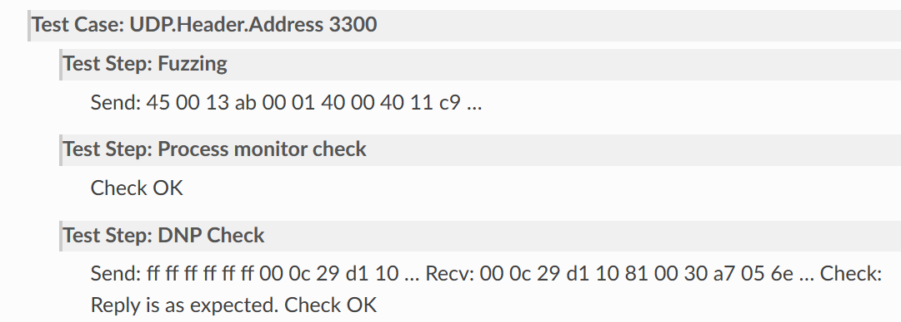

Logging¶
Boofuzz 利用各种日志类提供了灵活的日志记录功能，这些日志类都实现了
IFUzzLogger 接口。
如果想要同时使用多个日志，可参看
FuzzLogger
Logging Interface (IFuzzLogger)¶
IFuzzLogger 是一个用于记录 fuzz 数据的抽象类，当进行模糊测试时，主要有以下三个用法：
打开测试用例
打开测试步骤
使用其它记录方法
IFuzzLogger 提供了 Sulley 框架的记录接口和测试 writers。提供的方法旨在反映功能测试操作。 IFuzzLogger 提供了一种记录测试用例、通过、失败、测试步骤等的方法，而不是通用的调试/信息/警告方法。
下面的示例显示了记录器的用法： 
image-20230816092934097¶
每个 fuzz case 都会打开一个 test case，每个 test case 又包含多个 test step。通常 test step 的取值如下：
Fuzzing
Set up（pre-fuzzing）
Post-test cleanup
Instrumentation checks
Reset due to failure
在一个 test step 内，一个 test 测试也许会记录发送的数据、收到的数据、check、check results 以及其它的信息。
分析¶
close_test()¶
close_test 是测试完成之后会调用的方法，可以利用其来通知操作者或者是将测试日志保存起来。
源码：
@abc.abstractmethod def close_test(self): """ Called after a test has been completed. Can be used to inform the operator or save the test log. :param: None :type: None :return: None :rtype: None """ raise NotImplementedError
close_test_case()¶
同 close_test
源码：
@abc.abstractmethod def close_test_case(self): """ Called after a test case has been completed. Can be used to inform the operator or save the test case log. :param: None :type: None :return: None :rtype: None """ raise NotImplementedError
log_check(description)¶
在测试时记录对目标系统的检查情况。
参数：
description（str）- 接收到的数据
返回值：
None
源码：
@abc.abstractmethod def log_check(self, description): """ Records a check on the system under test. AKA "instrumentation check." :param description: Received data. :type description: str :return: None :rtype: None """ raise NotImplementedError
log_error(description)¶
该方法用于记录一个内部错误，并通知操作员测试（test）未能成功完成。
参数：
description（str）- 接收到的数据
返回值：
None
源码：
@abc.abstractmethod def log_error(self, description): """ Records an internal error. This informs the operaor that the test was not completed successfully. :param description: Received data. :type description: str :return: None :rtype: None """ raise NotImplementedError
log_fail(descript=””)¶
记录一个失败的检查（check），该方法会将一个模糊测试用例标识为潜在的 bug 或异常。
参数：
description（str）- 可选的补充数据
返回值：
None
源码:
@abc.abstractmethod def log_fail(self, description=""): """ Records a check that failed. This will flag a fuzzing case as a potential bug or anomaly. :param description: Optional supplementary data. :type description: str :return: None :rtype: None """ raise NotImplementedError
boofuzz.IFuzzLoggerBackend 是 IFuzzLogger 的别名
Console-GUI Logging¶
FUzzLoggerCurses 类使用 curses 库创建一个控制台 GUI 并格式化
FuzzLogger 数据放入控制台中显示。
该类还未在 Windows 下进行测试
INDENT_SIZE = 2
参数：¶
web_port（int）- web 接口的端口号，默认是 26000
window_height（int）- 默认的控制台高度，默认是 40
window_width（int）- 默认的控制台宽度，默认是 130
auto_scroll（bool）-
max_log_lines（int）- 保持在内部存储中的最大记录行数，超出此值的额外行将不会显示出来，默认是 500
wait_on_quit（bool）- 当主进程即将关闭时是否要保持 GUI 的打开状态并等待用户输入，默认为 True
min_refresh_rate（int）- 在检测终端尺寸重新调整的过程中，每次检测之间的延迟时间。默认值为1000毫秒（1秒），每次递增100毫秒
bytes_to_str（function）- 将发送或接收到的字节数据转为用于记录的字符串数据
返回值：
一个 FuzzLoggerCurses 对象
实现思路：
成员变量赋值：
self._title = "boofuzz" self._web_port = web_port self._max_log_lines = max_log_lines self._auto_scroll = auto_scroll self._current_data = None self._log_storage = [] self._fail_storage = [] self._wait_on_quit = wait_on_quit self._quit = False self._status = STATUS_RUNNING self._refresh_interval = min_refresh_rate self._event_resize = True self._event_log = False self._event_case_close = False self._event_crash = False self._total_index = 0 self._total_num_mutations = 0 self._current_name = "" self._current_index = 0 self._current_num_mutations = 0 self._format_raw_bytes = bytes_to_str self._version = helpers.get_boofuzz_version(helpers)
Text Logging¶
文本记录对应着 FuzzLoggerText 类，该类会将 FuzzLogger 数据格式化成文本形式并输出到标准输出或是文件中。如果想要既输出到 STDOUT 又输出到文件中，可以使用两个 FUzzLoggerTexts。
参数：
file_handle (io.BinaryIO) - 一个用于日志记录的文件句柄，默认值为
sys.stdout，也就是标准输出流bytes_to_str (Fucntion) - 用于将发送/接收的字节数据转换为字符串以进行日志记录，默认值为 DEFAULT_HEX_TO_STR
返回值：
实现思路：
成员变量赋值
def __init__(self, file_handle=sys.stdout, bytes_to_str=DEFAULT_HEX_TO_STR): """ :type file_handle: io.BinaryIO :param file_handle: Open file handle for logging. Defaults to sys.stdout. :type bytes_to_str: function :param bytes_to_str: Function that converts sent/received bytes data to string for logging. """ self._file_handle = file_handle self._format_raw_bytes = bytes_to_str